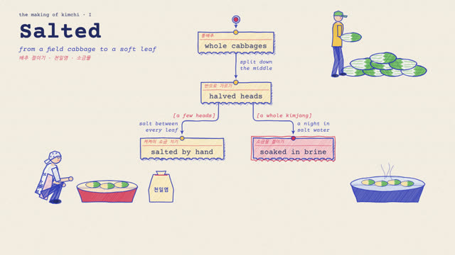
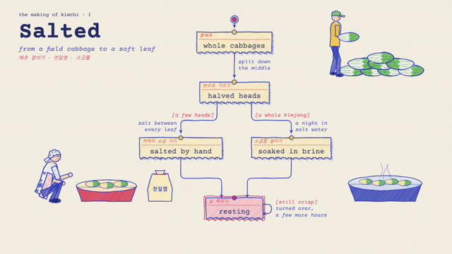
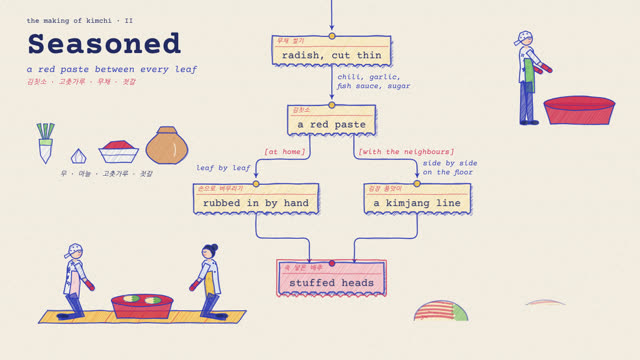
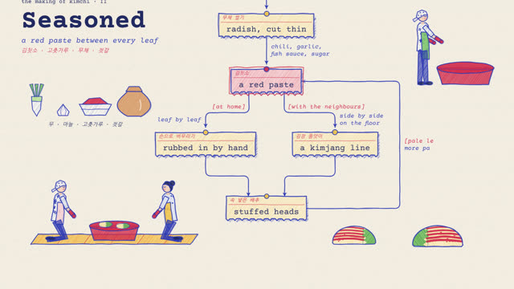
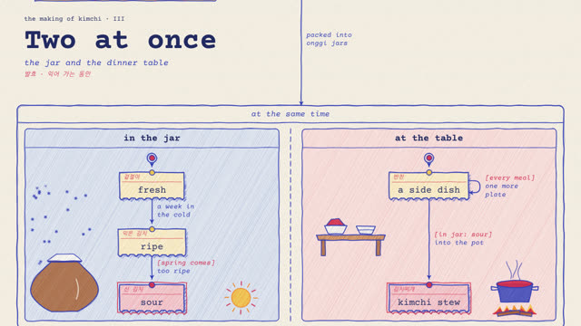
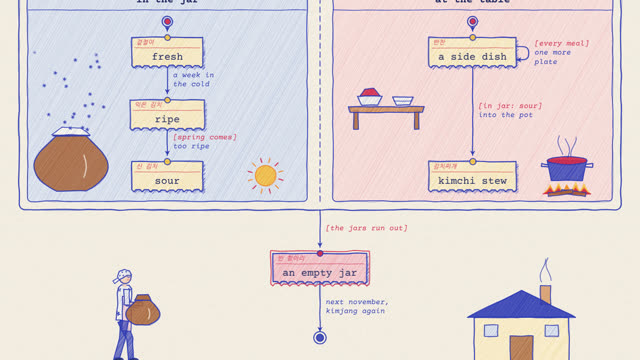

작업 흐름
- 입력
- 주제 하나(김치 담그기, 향 만들기, 버블티 가게의 하루, 택배가 오기까지 …)와 꼬리표에 쓸 두 번째 언어
- 브리프
- 주제마다 새로 쓰는
BRIEF.md: 2–4개의 장, 장마다 상태(지금 무엇인가)와 전이(무엇이 일어나는가), 조건이 붙은 갈래 하나, "아직이면 다시"의 고리 하나, 마지막 장의 동시에 바뀌는 두 영역, 단계표, 그 주제를 위해 새로 그릴 그림, 스틸 검토 기준 - 그림
- 브리프대로 새로 짠 상태도: 찢은 티켓 모양 상자, 빨간
[조건], 둥근 모서리 화살표, 색연필 빗금, 타자기 글씨, 그 단계의 일을 하는 사람과 도구 그림(키트에 없는 물건은 주제에 맞게 새로 그림), 아래로 따라 내려가는 카메라 - 확인
- 글씨 · 상자 · 그림의 겹침, 상자를 지나는 화살표, 화면 밖 요소, 결정성을 잡는 자동 점검과 콘택트 시트
- 출력
- 30fps 1350×1080 MP4, 재생 바의 버튼이 실제로 동작하는 라이브 페이지
cd crayon-statechart/examples/kimchi
node ../../scripts/check.mjs index.html
node ../../scripts/render.mjs index.html --sheet 16 --scale .5
node ../../scripts/render.mjs index.html --workers 4
node ../../scripts/new-film.mjs ../../../my-film # BRIEF.md부터요구 사항: Node + Playwright Chromium, ffmpeg. 네트워크가 필요 없습니다(한 프레임 10–30ms, 46초 예제를 워커 4개로 약 1분 40초). 단계별 순서는 SKILL.md에 있습니다.
샘플
예제 「김장 · the making of kimchi」의 장면들과, 같은 엔진으로 주제와 언어를 바꾼 템플릿, 소품 키트입니다. 카드를 누르면 새 탭에서 그 순간에 멈춘 장면이 열리고, 브라우저가 선 하나부터 직접 그립니다.
김장 · the making of kimchi 5:4 · 46초 · 3장 20단계
레퍼런스(베트남 향 만들기)에 없는 주제를 브리프부터 새로 설계한 예제입니다. 통배추가 절여지고, 김칫소가 버무려지고, 항아리 속 김치와 밥상이 동시에 바뀝니다. 본문은 영어, 빨간 꼬리표는 한국어이고, 속 넣은 배추 그림은 이 주제를 위해 새로 그렸습니다(BRIEF.md).





[in jar: sour]
택배 한 상자가 오기까지 · 템플릿과 소품 18초 · 1장 8단계
같은 엔진으로 주제를 바꾸고 본문을 한국어로, 꼬리표를 영어로 쓴 출발점과, 키트의 소품 전부입니다.
실제 작품
이 레포에서 만든 스킬입니다. X에 올라온 두 영상이 출발점입니다: Ann Nguyen이 만든 베트남 향 만드는 과정 다이어그램과, 그 글이 인용한 Kevin Ngo의 버블티 가게 상태도(JavaScript로 그린 다이어그램). 이 스킬은 그 화면의 문법(종이 위 잉크와 색연필, 타자기 글씨, 조건이 붙은 갈래, 고리, 동시에 바뀌는 영역, 단계마다 자라는 그림과 재생 바)만 가져오고, 엔진과 예제의 주제 · 배치 · 그림은 모두 이 레포의 것입니다.
링크
- SKILL.md 워크플로
- 폴더 lib · scripts · templates · references · examples
- README.md 빠른 시작
- references/BRIEF.md 고정되는 스타일과 주제마다 새로 설계하는 것, 브리프 틀, 스틸 검토 기준
- references/LOOK.md 레퍼런스처럼 보이게 하는 것: 종이, 잉크, 글씨, 상자, 화살표, 그림, 움직임
- references/STORY.md 주제 → 장 → 상태 → 단계, 배치 공식
- references/KIT.md API와 소품 목록, 직접 만드는 소품
- references/LESSONS.md 겪은 문제와 해결